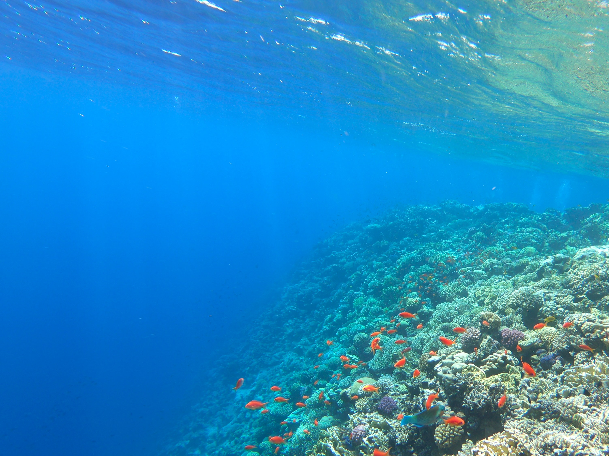

Menu
Home
What is BLAB?
What is the Blue Amazonia?
People
Contact
The Blue Amazonia Brain
BLAB
The Blue Amazonia Brain
BLAB

The Blue Amazonia Brain
BLAB
The Blue Amazonia Brain
BLAB
The Blue Amazonia Brain
BLAB
The BLAB InfoMap
Questions about the Blue Amazonia? Ask BLAB.